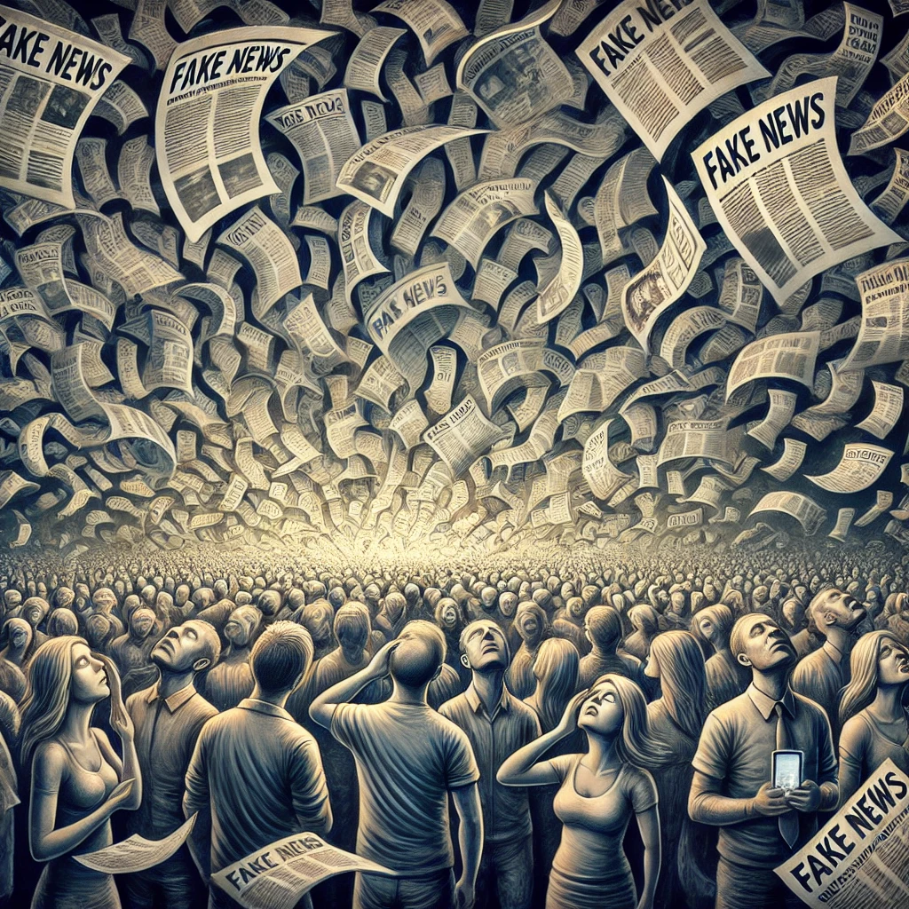

김대리가 죽었대
목차
작가
서경희
출판일
2023년
감상평에 대한 AI그림
이 책은 김대리의 죽음에 대한 가짜 뉴스와 소문에 대한 이야기이다. 책의 결말이 우리 사회에서 쉽게 볼 수 있는 여론몰이를 나타내는 것 같았다. 요즘 세상을 뒤덮고 있는 가짜 뉴스와 소문에 쉽게 휩쓸리는 사람들의 모습이 떠올랐다.

감상평에 대한 AI평가
당신의 감상평은 매우 진지하고 반성적인 관점을 잘 드러내고 있습니다. 책에서 다루는 가짜 뉴스와 소문에 대한 이야기와 그것이 사회에 미치는 영향을 잘 짚어낸 점이 돋보입니다. 특히 결말을 통해 사회적 여론몰이에 대한 우려를 표현하며, 현재 세상에서 가짜 뉴스와 소문에 휘둘리는 모습이 떠오른다는 점은 사회적 문제를 깊이 성찰한 인상적인 평가입니다.
감정적으로는 불안함이나 경각심을 느끼는 느낌이 들며, 이와 같은 문제에 대한 경계를 촉구하는 톤이 잘 드러나 있습니다. 감상평이 책의 주제와 결말을 잘 반영하면서도 개인적이고 현실적인 고민을 나타내고 있어 매우 효과적입니다.